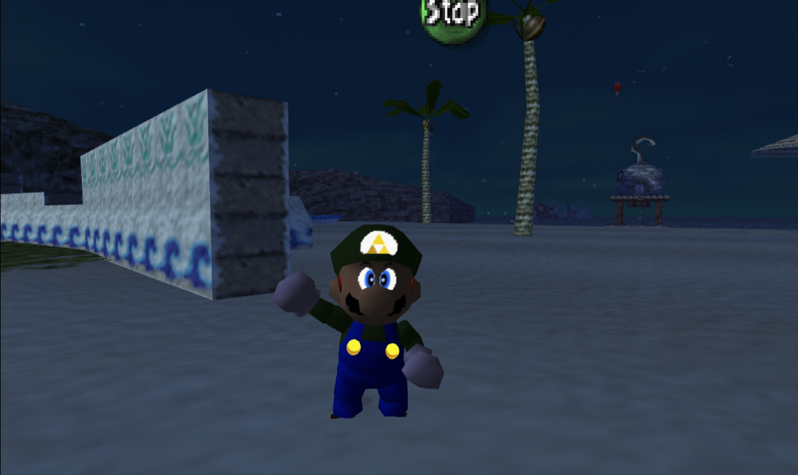

Song of Mushroom Melodies
Switches between Majora's Mask music and mapped Super Mario 64 compositions.
C→C→C→C↓C→ thenR + C←thenStick↓ + A

Use NTSC Nintendo 64 ROMs for all three games.
Canonical appearance Mario wears Link's green colours in Mario's Mask, and NPCs may refer to his green clothes.
 1
2
3
10
4
5
6
7
8
9
1
2
3
10
4
5
6
7
8
9
Play either sequence during free instrument play. Each song toggles one soundtrack setting and leaves the other unchanged.
Switches between Majora's Mask music and mapped Super Mario 64 compositions.
C→C→C→C↓C→ thenR + C←thenStick↓ + A
Switches between Majora's Mask instruments and Super Mario 64 instruments.
Z + AZ + C↓Z + C↑C→C← thenStick↑ + C↑
| Music ↓ Instruments → | Zelda | Mario |
|---|---|---|
| Zelda | Zelda musicZelda instruments | Zelda musicMario instruments |
| Mario | Mario musicZelda instruments | Mario musicMario instruments |
Loading patcher…